\gdef\red#1{{\color{cb8680}{#1}}} \gdef\green#1{{\color{4f8d63}{#1}}} \gdef\gray#1{{\color{gray}{#1}}} \gdef\purple#1{{\color{B189C6}{#1}}} \gdef\orange#1{{\color{dfa04b}{#1}}} \gdef\white#1{{\color{white}{#1}}}
定义：考虑 aaa 为 f(z)f(z)f(z) 的 孤立奇点，因此存在 R>0R > 0R>0 使得 fff 在 N(a,R)−{a}N(a, R) - \{a\}N(a,R)−{a} 中解析。定义 fff 在 aaa 处的 留数 (residue) 为
Resz=af(z)≔12πi∮∣z−a∣=ρ<Rf(z)dz\green{\mathop{\operatorname{Res}}_{z = a} f(z)} \coloneqq \frac{1}{2\pi i} \oint_{|z - a| = \rho < R} f(z) dz Resz=af(z):=2πi1∮∣z−a∣=ρ<Rf(z)dz
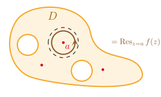
Resz=af(z)≔12πi∮∣z−a∣=ρ<Rf(z)dz\green{\mathop{\operatorname{Res}}_{z = a} f(z)} \coloneqq \orange{\frac{1}{2\pi i}} \oint_{|z - a| = \rho < R} f(z) dz Resz=af(z):=2πi1∮∣z−a∣=ρ<Rf(z)dz
留数的记号
留数的记号因人而异，可以写
Resf(a),Res(f,a),Res∣z=af(z),Resz→af(z),⋯\operatorname{Res}f(a), \quad \operatorname{Res}(f, a), \quad \operatorname{Res}\Big|_{z = a}f(z), \quad \mathop{\operatorname{Res}}_{z \to a}f(z), \quad \cdots Resf(a),Res(f,a),Resz=af(z),Resz→af(z),⋯
只有一个奇点
根据设定，fff 在去心邻域内解析，因此积分围道 只 包围一个奇点 aaa。
奇点类型
aaa 可以是 fff 的任意孤立奇点，三种都行。
ρ\rhoρ 无关性
显然积分与 ρ\rhoρ 无关，只要 0<ρ<R0 < \rho < R0<ρ<R
围道
积分围道 不一定 是圆圈，只要是在 N(a,R)−{a}N(a, R) - \{a\}N(a,R)−{a} 中的简单围道即可。
Laurent 展开系数
fff 在 0<∣z−a∣<R0 < |z - a| < R0<∣z−a∣<R 中解析，因此可 Laurent 展开，
f(z)=∑n=−∞+∞λn(z−a)nf(z) = \sum_{n = - \infty}^{+\infty} \lambda_n (z - a)^n f(z)=n=−∞∑+∞λn(z−a)n
其中，
λ−1=12πi∮∣z−a∣=ρf(ζ)dζ=Resz=af(z)\lambda_{-1} = \frac{1}{2\pi i} \oint_{|z - a| = \rho} f(\zeta) d\zeta = \mathop{\operatorname{Res}}_{z = a} f(z) λ−1=2πi1∮∣z−a∣=ρf(ζ)dζ=Resz=af(z)
考虑 f(z)=λzf(z) = \frac{\lambda}{z}f(z)=zλ
奇点是 000，是 单极点；f(z)=⋯+0+λz−1+0+⋯f(z) = \cdots + 0 + \lambda z^{-1} + 0 + \cdotsf(z)=⋯+0+λz−1+0+⋯
留数 Resz=0f(z)=λ\mathop{\operatorname{Res}}_{z = 0}f(z) = \lambdaResz=0f(z)=λ
考虑 f(z)=λz−1f(z) = \frac{\lambda}{z - 1}f(z)=z−1λ
奇点是 111，是 单极点；f(z)=⋯+0+λ(z−1)−1+0+⋯f(z) = \cdots + 0 + \lambda (z - 1)^{-1} + 0 + \cdotsf(z)=⋯+0+λ(z−1)−1+0+⋯
留数 Resz=1f(z)=λ\mathop{\operatorname{Res}}_{z = 1}f(z) = \lambdaResz=1f(z)=λ
考虑 f(z)=λz2f(z) = \frac{\lambda}{z^2}f(z)=z2λ
奇点是 000，是 二阶极点；f(z)=⋯+0+λz−2+0+⋯f(z) = \cdots + 0 + \lambda z^{-2} + 0 + \cdotsf(z)=⋯+0+λz−2+0+⋯
留数 Resz=0f(z)=0\mathop{\operatorname{Res}}_{z = 0}f(z) = 0Resz=0f(z)=0
考虑 f(z)=λz3f(z) = \frac{\lambda}{z^3}f(z)=z3λ
奇点是 000，是 三阶极点；f(z)=⋯+0+λz−3+0+⋯f(z) = \cdots + 0 + \lambda z^{-3} + 0 + \cdotsf(z)=⋯+0+λz−3+0+⋯
考虑 f(z)=1z2λz−1f(z) = \frac{1}{z^2} \frac{\lambda}{z - 1}f(z)=z21z−1λ，λ≠0\lambda \ne 0λ=0。
则 原点 是孤立奇点，且是 二阶极点。
以原点为中心，在去心邻域 0<∣z∣<10 < |z| < 10<∣z∣<1 内，
f(z)=−λz211−z=−λz2∑k=0zk=−λz2 −λz−λ−…\begin{align*} f(z) &= - \frac{\lambda}{z^2} \orange{\frac{1}{1 - z}} = - \frac{\lambda}{z^2} \orange{\sum_{k = 0}z^k}= - \frac{\lambda}{z^2} \ \green{- \frac{\lambda}{z}} - \lambda - \ldots \end{align*} f(z)=−z2λ1−z1=−z2λk=0∑zk=−z2λ −zλ−λ−…
因此
Resz=0f(z)=−λ≠0\mathop{\operatorname{Res}}_{z = 0} f(z) = - \lambda \ne 0 Resz=0f(z)=−λ=0
f(z)=1(z−a)mφ(z),m≥1f(z) = \frac{1}{(z - a)^m} \varphi(z), \qquad m \ge 1 f(z)=(z−a)m1φ(z),m≥1
f(z)=1(z−a)m∑k≥0φ(k)(a)k!(z−a)k=…+1(z−a)mφ(m−1)(a)(m−1)!(z−a)m−1+…\begin{align*} f(z) &= \frac{1}{(z - a)^m} \orange{\sum_{k \ge 0} \frac{\varphi^{(k)}(a)}{k!} (z - a)^k} \\ &= \ldots + \frac{1}{\red{(z - a)^m}} \green{\frac{\varphi^{(m - 1)}(a)}{(m - 1)!}} \red{(z - a)^{m - 1}} + \ldots \end{align*} f(z)=(z−a)m1k≥0∑k!φ(k)(a)(z−a)k=…+(z−a)m1(m−1)!φ(m−1)(a)(z−a)m−1+…
Resz=af(z)=φ(m−1)(a)(m−1)!\mathop{\operatorname{Res}_{z = a}} f(z) = \green{\frac{\varphi^{(m - 1)}(a)}{(m - 1)!}} Resz=af(z)=(m−1)!φ(m−1)(a)
高阶导数公式
Resz=af(z)=12πi∮φ(z)(z−a)mdz=1(m−1)!φ(m−1)(a)\operatorname{Res}_{z = a}f(z) = \frac{1}{2\pi i}\oint \frac{\varphi(z)}{(z - a)^m}dz = \frac{1}{(m - 1)!} \varphi^{(m - 1)}(a) Resz=af(z)=2πi1∮(z−a)mφ(z)dz=(m−1)!1φ(m−1)(a)
公式 1：Laurent 展开求 −1-1−1 次幂系数
公式 2：若 aaa 是 mmm-阶极点，则
Resz=af(z)=1(m−1)!dm−1dzm−1∣z=a[(z−a)mf(z)]\mathop{\operatorname{Res}}_{z = a} f(z) = \frac{1}{(m - 1)!} \frac{d^{m - 1}}{dz^{m - 1}}\bigg|_{z = a}\Big[ (z - a)^m f(z) \Big] Resz=af(z)=(m−1)!1dzm−1dm−1z=a[(z−a)mf(z)]
mmm
注意 mmm 与 m−1m - 1m−1 的位置。当 m=1m = 1m=1 的时候，定义 000 阶导数
d0dz0∣z=a[(z−a)f(z)]=limz→a[(z−a)f(z)]\frac{d^0}{dz^0}\bigg|_{z = a} \Big[(z - a) f(z)\Big] = \lim_{z \to a}\Big[(z - a)f(z)\Big] dz0d0z=a[(z−a)f(z)]=z→alim[(z−a)f(z)]
说明
由于 f(z)f(z)f(z) 在 aaa 是 mmm-阶极点，因此在 aaa 去心邻域 f(z)=φ(z)/(z−a)mf(z) = \varphi(z)/(z - a)^mf(z)=φ(z)/(z−a)m。用刚介绍的讨论，
Resz=af(z)=φ(m−1)(a)(m−1)!=1(m−1)!dm−1dzm−1∣z=a[(z−a)mf(z)]\mathop{\operatorname{Res}}_{z = a} f(z) = \frac{\green{\varphi}^{\purple{(m - 1)}}\green{(a)}}{\orange{(m - 1)!}} = \frac{1}{\orange{(m-1)!}} \purple{\frac{d^{m - 1}}{dz^{m - 1}}}\bigg|_{z = a}\Big[\green{(z - a)^m f(z)}\Big] Resz=af(z)=(m−1)!φ(m−1)(a)=(m−1)!1dzm−1dm−1z=a[(z−a)mf(z)]
公式 3：若 f(z)=φ(z)ψ(z)f(z) = \frac{\varphi(z)}{\psi(z)}f(z)=ψ(z)φ(z)，其中 φ,ψ\varphi, \psiφ,ψ 在 aaa 某邻域内解析，且 φ(a)≠0\varphi(a)\ne 0φ(a)=0，而 aaa 是 ψ\psiψ 的 单零点。则
Resz=af(z)=φ(a)ψ′(a)\mathop{\operatorname{Res}}_{z = a} f(z) = \frac{\varphi(a)}{\psi'(a)} Resz=af(z)=ψ′(a)φ(a)
导数
导数只对分母做。
显然 aaa 是单极点。利用公式 2，
Resz=af(z)=limz→a(z−a)f(z)=limz→a(z−a)φ(z)ψ′(a)(z−a)+O(z−a)2=φ(a)ψ′(a)\begin{align*} \mathop{\operatorname{Res}}_{z = a} f(z) &= \lim_{z \to a} (z - a)f(z)\\ &= \lim_{z \to a} (z - a)\frac{\varphi(z)}{\psi'(a)(z - a) + O(z - a)^2} = \frac{\varphi(a)}{\psi'(a)} \end{align*} Resz=af(z)=z→alim(z−a)f(z)=z→alim(z−a)ψ′(a)(z−a)+O(z−a)2φ(z)=ψ′(a)φ(a)
公式 4：若 f(z)=φ(z)z−af(z) = \frac{\varphi(z)}{z - a}f(z)=z−aφ(z)，其中 φ\varphiφ 在 aaa 某邻域内解析，且 φ(a)≠0\varphi(a)\ne 0φ(a)=0。则
Resz=af(z)=φ(a)\mathop{\operatorname{Res}}_{z = a} f(z) = \varphi(a) Resz=af(z)=φ(a)
用上一个公式证明。
f(z)=φ(z)(z−z1)(z−z2)⋯(z−zn),zi≠zj,∀i≠jf(z) = \frac{\varphi(z)}{(z - z_1)(z - z_2) \cdots (z - z_n)}, \qquad z_i \ne z_j, \forall i \ne j f(z)=(z−z1)(z−z2)⋯(z−zn)φ(z),zi=zj,∀i=j
Resz=zif(z)=φ(zi)∏j=1,j≠in(zi−zj)\mathop{\operatorname{Res}}_{z = z_i} f(z) = \frac{\varphi(z_i)}{\prod_{\substack{j = 1, j \ne i}}^n(z_i - z_j)} Resz=zif(z)=∏j=1,j=in(zi−zj)φ(zi)
利用公式 3，以及暴力求导结果
[(z−z1)(z−z2)⋯(z−zn)]z=zi′=∏j=1j≠in(zi−zj)[(z - z_1)(z - z_2) \cdots (z - z_n)]'_{z = z_i} = \prod_{\substack{j = 1 \\ j \ne i}}^n(z_i - z_j) [(z−z1)(z−z2)⋯(z−zn)]z=zi′=j=1j=i∏n(zi−zj)
例：考虑函数 f(z)=1znf(z) = \frac{1}{z^n}f(z)=zn1，n=1,2,3,…n = 1, 2, 3, \ldotsn=1,2,3,…。求 fff 在原点处的留数。
解
或者用公式 2：原点是 nnn-阶极点，因此
Resz=0f(z)=1(n−1)!dn−1dzn−1∣z=0[zn1zn]\mathop{\operatorname{Res}}_{z = 0}f(z) = \frac{1}{(n - 1)!}\frac{d^{n - 1}}{dz^{n - 1}} \bigg|_{z = 0}\Big[z^n\frac{1}{z^n}\Big] Resz=0f(z)=(n−1)!1dzn−1dn−1z=0[znzn1]
(1) 当 n>1n > 1n>1 时，dn−1dzn−1[1]=0\frac{d^{n - 1}}{dz^{n - 1}} [1] = 0dzn−1dn−1[1]=0
(2) 当 n=1n = 1n=1 时，
d0dz0[1]=limz→01=1\frac{d^0}{dz^0} [1] = \purple{\lim_{z \to 0} 1} = 1 dz0d0[1]=z→0lim1=1
例：证明
Resz=zk1z2n+1=−zk2n\operatorname{Res}_{z = z_k} \frac{1}{z^{2n} + 1} = - \frac{z_k}{2n} Resz=zkz2n+11=−2nzk
其中 zkz_kzk 是 −1-1−1 的第 kkk 个 2n2n2n 次根，zk≔eπi2n+2πik2nz_k \coloneqq e^{\frac{\pi i}{2n} + \frac{2\pi i k}{2n}}zk:=e2nπi+2n2πik
利用公式 3，以及 (z2n+1)′=2nz2n−1(z^{2n} + 1)' = \purple{2n z^{2n - 1}}(z2n+1)′=2nz2n−1，
Resz=zk1z2n+1=12nzk2n−1=zk2nzk2n=−zk2n\operatorname{Res}_{z = z_k} \frac{1}{z^{2n} + 1} = \frac{1}{\purple{2n z_k^{2n - 1}}} = \frac{z_k}{2n z_k^{2n}} = - \frac{z_k}{2n} Resz=zkz2n+11=2nzk2n−11=2nzk2nzk=−2nzk
其中最后一个等号用了 zk2n+1=0z_k^{2n} + 1 = 0zk2n+1=0。
Resz=zk1z2n+1=1∏j=0j≠k2n−1(zk−zj)\operatorname{Res}_{z = z_k} \frac{1}{z^{2n} + 1} = \frac{1}{\prod_{\substack{j = 0 \\ j \ne k}}^{2n - 1}(z_k - z_j)} Resz=zkz2n+11=∏j=0j=k2n−1(zk−zj)1
−zk2n=1∏j=0j≠k2n−1(zk−zj)- \frac{z_k}{2n} = \frac{1}{\prod_{\substack{j = 0 \\ j \ne k}}^{2n - 1}(z_k - z_j)} −2nzk=∏j=0j=k2n−1(zk−zj)1
留数定理：设 fff 在单连通或复连通区域 DDD 中有 有限个 孤立 奇点 ai=1,…,na_{i = 1, \ldots, n}ai=1,…,n，且 fff 在 D‾−{ai}\overline D - \{a_i\}D−{ai} 上解析。则
12πi∮∂Df(z)dz=∑i=1nResz=aif(z)\frac{1}{2\pi i}\oint_{\partial D} f(z) dz = \sum_{i = 1}^n \mathop{\operatorname{Res}}_{z = a_i}f(z) 2πi1∮∂Df(z)dz=i=1∑nResz=aif(z)
证明思路
对复通区域 D−{ai}D - \{a_i\}D−{ai} 使用柯西积分定理即可。
计算积分
I≔∮∣z∣=ρ≠0,11z(z−1)2dz\mathcal{I} \coloneqq \oint_{|z| = \rho \ne 0, 1} \frac{1}{z(z - 1)^2} dz I:=∮∣z∣=ρ=0,1z(z−1)21dz
求解
首先判断奇点：
一阶极点 z=0z = 0z=0 \qquad\qquad 二阶极点 z=1z = 1z=1
I=(2πi)Resz=0f(z)=2πilimz→0[zf(z)]=2πi\mathcal{I} = (2\pi i) \mathop{\operatorname{Res}}_{z = 0} f(z) = 2\pi i\lim_{z \to 0} [zf(z)] = 2\pi i I=(2πi)Resz=0f(z)=2πiz→0lim[zf(z)]=2πi
I=2πi(Resz=0f(z)+Resz=1f(z))\mathcal{I} = 2\pi i \left( \mathop{\operatorname{Res}}_{z = 0}f(z) + \mathop{\operatorname{Res}}_{z = 1}f(z) \right) I=2πi(Resz=0f(z)+Resz=1f(z))
= 2πi[1+1(2−1)!ddz∣z=1((z−1)2f(z))]= 2πi[1−1z2∣z=1]=0\begin{align*} = & \ 2\pi i\left[ 1 + \frac{1}{(2 - 1)!} \frac{d}{dz}\Big|_{z = 1} \Big((z - 1)^2 f(z)\Big) \right] \\ = & \ 2\pi i\left[ 1 - \frac{1}{z^2}\Big|_{z = 1} \right] = 0 \end{align*} == 2πi[1+(2−1)!1dzdz=1((z−1)2f(z))] 2πi[1−z21z=1]=0
I=∮∣z∣=ρ>0sinzzdz\mathcal{I} = \oint_{|z| = \rho > 0} \frac{\sin z}{z} dz I=∮∣z∣=ρ>0zsinzdz
围道包围奇点为原点，因此 I=2πiResz=0sinzz\mathcal{I} = 2\pi i \operatorname{Res}_{z = 0}\frac{\sin z}{z}I=2πiResz=0zsinz。有许多方法计算。
原点是 可去奇点，因此 主要部分 为 零，从而 −1-1−1-次幂项系数为零，因此留数为零。
也可以用 Cauchy 积分公式，I=2πi(sinz)∣z=0=0\mathcal{I} = 2\pi i (\sin z)\Big|_{z = 0} = 0I=2πi(sinz)z=0=0。
I=∮∣z∣=ρ>0zsinzdz,ρ>0,ρ≠nπ\mathcal{I} = \oint_{|z| = \rho > 0} \frac{z}{\sin z} dz, \qquad \rho > 0, \rho \ne n \pi I=∮∣z∣=ρ>0sinzzdz,ρ>0,ρ=nπ
先判断奇点：
sinz=0⇒z=kπ,k∈Z\sin z = 0 \qquad \Rightarrow \qquad z = k\pi, \quad k\in \mathbb{Z} sinz=0⇒z=kπ,k∈Z
无穷多个奇点：对称 分布在 000 两侧。
假设 −nπ,−(n−1)π,…,0,…,(n−1)π,nπ-n \pi, - (n - 1)\pi, \ldots, 0, \ldots, (n - 1)\pi, n \pi−nπ,−(n−1)π,…,0,…,(n−1)π,nπ 被围道所包围。
这些都是积分函数的 单极点，除了原点是 可去极点。
Resz=kπzsinz=z(sinz)′∣z=kπ=kπcoskπ=(−1)kkπ→k=00\mathop{\operatorname{Res}}_{z = k \pi} \frac{z}{\sin z} = \frac{z}{(\sin z)'} \Big|_{z = k \pi} = \frac{k\pi}{\cos k\pi} = (-1)^k k\pi \xrightarrow{k = 0} 0 Resz=kπsinzz=(sinz)′zz=kπ=coskπkπ=(−1)kkπk=00
于是积分等于
I= 2πi∑k=−n+n(kπ)(−1)k= 2πi∑k=1+n(kπ)(−1)k+2πi∑k=1n(−kπ)(−1)−k=0\begin{align*} \mathcal{I} = & \ 2\pi i \sum_{k = - n}^{+n} (k \pi) (-1)^k\\ = & \ 2\pi i \sum_{k = 1}^{+n} \red{(k \pi)} \blue{(-1)^k} + 2\pi i \sum_{k = 1}^{n} \red{(- k \pi)} \blue{(-1)^{- k}} = 0 \end{align*} I== 2πik=−n∑+n(kπ)(−1)k 2πik=1∑+n(kπ)(−1)k+2πik=1∑n(−kπ)(−1)−k=0
I=∮∣z∣=1e1z\mathcal{I} = \oint_{|z| = 1} e^{\frac{1}{z}} I=∮∣z∣=1ez1
ez~=∑k≥01k!(z~)k=∑k≥01k!1zk⇒λ−1=1⇒I=2πi×1e^{\tilde z} = \sum_{k \ge 0} \frac{1}{k!} (\tilde z)^k = \sum_{k \ge 0} \frac{1}{k!} \frac{1}{z^k} \qquad \Rightarrow\lambda_{-1} = 1 \qquad \Rightarrow \mathcal{I} = 2\pi i \times 1 ez~=k≥0∑k!1(z~)k=k≥0∑k!1zk1⇒λ−1=1⇒I=2πi×1
假设 f(z)f(z)f(z) 在 aaa 处有一个 单极点，Arc(r,θ1→θ2)\operatorname{Arc}(r, \theta_1 \to \theta_2)Arc(r,θ1→θ2) 是以 aaa 为中心半径为 rrr 的一小段弧，从辐角 θ1\theta_1θ1 延伸到 θ2\theta_2θ2。论证
1i(θ1−θ2)limr→0∫Arc(r,θ1→θ2)f(z)dz=Resz=af(z)\frac{1}{i(\theta_1 - \theta_2)}\lim_{r \to 0}\int_{\operatorname{Arc}(r, \theta_1 \to \theta_2)} f(z) dz = \operatorname{Res}_{z = a}f(z) i(θ1−θ2)1r→0lim∫Arc(r,θ1→θ2)f(z)dz=Resz=af(z)
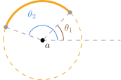
∫Arc(r,θ1→θ2)f(z)dz=∫θ1θ2Rreiθrieiθdθ+∫Arc(r,θ1→θ2)g(z)dz\int_{\operatorname{Arc}(r, \theta_1 \to \theta_2)} f(z) dz = \int_{\theta_1}^{\theta_2} \frac{R}{r e^{i\theta}} r ie^{i\theta} d\theta + \int_{\operatorname{Arc}(r, \theta_1 \to \theta_2)} g(z) dz ∫Arc(r,θ1→θ2)f(z)dz=∫θ1θ2reiθRrieiθdθ+∫Arc(r,θ1→θ2)g(z)dz
∫θ1θ2Rreiθrieiθdθ=iR(θ2−θ1)\int_{\theta_1}^{\theta_2} \frac{R}{r e^{i\theta}} r ie^{i\theta} d\theta = i \green{R} (\theta_2 - \theta_1) ∫θ1θ2reiθRrieiθdθ=iR(θ2−θ1)
limr→0∫Arc(r,θ1→θ2)f(z)dz=i(θ2−θ1)Resz=af(z)\lim_{r \to 0}\int_{\operatorname{Arc}(r, \theta_1 \to \theta_2)} f(z) dz = i (\theta_2 - \theta_1) \green{\mathop{\operatorname{Res}}_{z = a}f(z)} r→0lim∫Arc(r,θ1→θ2)f(z)dz=i(θ2−θ1)Resz=af(z)
推论：若 f(z)f(z)f(z) 在 aaa 处有单极点，则小半圆积分给出 半留数
12πi∫f(z)dz=12Resz=af(z)\frac{1}{2\pi i}\int f(z)dz = \orange{\frac{1}{2}} \mathop{\operatorname{Res}}_{z = a} f(z) 2πi1∫f(z)dz=21Resz=af(z)
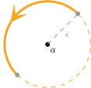
考虑 有理函数 R(x,y)R(x, y)R(x,y)，以及 [0,2π][0, 2\pi][0,2π] 积分
I=∫02πR(cosθ,sinθ)dθ\mathcal{I} = \int_0^{2\pi} R(\cos \theta, \sin \theta) d\theta I=∫02πR(cosθ,sinθ)dθ
利用
cosθ=12(eiθ+e−iθ),sinθ=12i(eiθ−e−iθ)\cos \theta = \frac{1}{2} (e^{i \theta} + e^{- i \theta}), \qquad \sin \theta = \frac{1}{2i} (e^{i \theta} - e^{- i \theta}) cosθ=21(eiθ+e−iθ),sinθ=2i1(eiθ−e−iθ)
重写
I=∮∣z∣=1R(z+z−12,z−z−12i)dziz,z=eiθ\mathcal{I} = \oint_{|z| = 1} R\left(\frac{z + z^{-1}}{2}, \frac{z - z^{-1}}{2i}\right) \frac{dz}{iz}, \qquad z = e^{i \theta} I=∮∣z∣=1R(2z+z−1,2iz−z−1)izdz,z=eiθ
dθd\thetadθ
注意 dz=d(eiθ)=eiθidθ=zidθdz = d(e^{i\theta}) = e^{i \theta} i d\theta = z i d\thetadz=d(eiθ)=eiθidθ=zidθ，因此 dθ=dz/(iz)d\theta = dz/(iz)dθ=dz/(iz).
积分微元
dz=deiθ=ieiθdθ=izdθ⇒dθ=dzizdz = de^{i \theta} = i e^{i \theta} d\theta = iz d\theta \qquad\Rightarrow \qquad d\theta = \frac{dz}{iz} dz=deiθ=ieiθdθ=izdθ⇒dθ=izdz
考虑 0<a<10 < a < 10<a<1。计算
I=∫02πdθ1+acosθ\mathcal{I} = \int_0^{2\pi} \frac{d\theta}{1 + a \cos\theta} I=∫02π1+acosθdθ
按公式，
I=∮∣z∣=111+az+z−12dziz=(−2i)∮∣z∣=1dzaz2+2z+a\mathcal{I} = \oint_{|z|= 1 } \frac{1}{1 + a \frac{z + z^{-1}}{2}} \frac{dz}{iz} = (-2i) \oint_{|z| = 1}\frac{dz}{az^2 + 2z + a} I=∮∣z∣=11+a2z+z−11izdz=(−2i)∮∣z∣=1az2+2z+adz
z±=−2±4−4a22a=−1a±1a2−1z_\pm = \frac{-2 \pm \sqrt{4 - 4a^2}}{2a} = - \frac{1}{a} \pm \sqrt{\frac{1}{a^2} - 1} z±=2a−2±4−4a2=−a1±a21−1
z+z−=1⇒∣z+∣∣z−∣=1⇒∣z+∣<1<∣z−∣z_+ z_- = 1 \Rightarrow |z_+| |z_-| = 1 \Rightarrow |z_+| < 1 < |z_-| z+z−=1⇒∣z+∣∣z−∣=1⇒∣z+∣<1<∣z−∣
I=2πi(−2i)Resz=z+1a(z−z+)(z−z−)=2πi(−2i)a(z+−z−)=2π1−a2\begin{align*} \mathcal{I} & = 2\pi i(-2i) \mathop{\operatorname{Res}}_{z = z_+}\frac{1}{a(z - z+) (z - z_-)} = \frac{2\pi i(-2i)}{a(z_+ - z_-)} = \frac{2\pi}{\sqrt{1 - a^2}} \end{align*} I=2πi(−2i)Resz=z+a(z−z+)(z−z−)1=a(z+−z−)2πi(−2i)=1−a22π
I=∫−∞+∞f(x)eimxdx\mathcal{I} = \int_{-\infty}^{+\infty} f(x) e^{i m x}dx I=∫−∞+∞f(x)eimxdx
{zf(z)⇒0,若 m=0f(z)⇒0,若 m>0\left\{\begin{array}{c c} z f(z) \Rightarrow 0, & \text{若} \ m = 0 \\ f(z) \Rightarrow 0, & \text{若} \ m > 0 \end{array}\right . {zf(z)⇒0,f(z)⇒0,若 m=0若 m>0
则有
limR→+∞∫−R+Rf(x)eimxdx=2πi∑iResz=ai[f(z)eimz]\lim_{R \to +\infty} \int_{-R}^{+R}f(x)e^{im x}dx = 2\pi i \sum_{i} \mathop{\operatorname{Res}}_{z = a_i} \Big[f(z)e^{im z} \Big] R→+∞lim∫−R+Rf(x)eimxdx=2πii∑Resz=ai[f(z)eimz]
一致趋零
函数 f(z)⇒0f(z) \Rightarrow 0f(z)⇒0 指的是函数 fff 一致趋零，即当 z→∞z \to \inftyz→∞ (沿上半平面的所有方向) f(z)f(z)f(z) 都趋于零，而且趋零的速度 大致相同：
对 ∀ϵ>0\forall \epsilon > 0∀ϵ>0，∃R>0\exists R > 0∃R>0，s.t. 当 ∣z∣>R|z| > R∣z∣>R 就有 ∣f(z)∣<ϵ|f(z)| < \epsilon∣f(z)∣<ϵ
一致趋零例子
下面是常见的 z→∞z \to \inftyz→∞ 时一致趋零的函数
1zm>0⇒0,Pm(z)Pm+1(z)⇒0 ,1zm>0+a⇒0, a∈C .\begin{align*} \frac{1}{z^{m > 0}} \Rightarrow 0, \qquad \frac{P_m(z)}{P_{m + 1}(z)} \Rightarrow 0 \ , \qquad \frac{1}{z^{m > 0} + a} \Rightarrow 0, \ a \in \mathbb{C} \ . \end{align*} zm>01⇒0,Pm+1(z)Pm(z)⇒0 ,zm>0+a1⇒0, a∈C .
证明概要
[−R,R][-R, R][−R,R] 的积分可以通过添加大半圆变成围道积分，
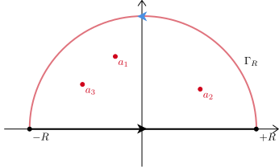
(1) Jordan 引理 (证明见教材)：大 zzz 一致趋零行为导致
limR→+∞∫ΓRf(z)eimzdz=0 .\begin{align*} \lim_{R \to +\infty}\red{\int_{\Gamma_R}} f(z) e^{i m z} dz = 0 \ . \end{align*} R→+∞lim∫ΓRf(z)eimzdz=0 .
(2) 利用留数定理
(∫−R+R+∫ΓR)f(z)eimzdz= 2πi∑iResz=ai[f(z)eimz]limR→+∞∫−R+Rf(z)eimzdz= 2πi∑iResz=ai[f(z)eimz] .\begin{align*} \left(\int_{-R}^{+R} + \red{\int_{\Gamma_R}}\right)f(z) e^{i m z}dz = & \ \purple{2\pi i \sum_{i} \mathop{\operatorname{Res}}_{z = a_i} \left[f(z) e^{i m z}\right]}\\ \orange{\lim_{R \to + \infty}} \int_{-R}^{+R} f(z)e^{imz}dz = & \ \purple{2\pi i \sum_{i} \mathop{\operatorname{Res}}_{z = a_i} \left[f(z) e^{i m z}\right]} \ . \end{align*} (∫−R+R+∫ΓR)f(z)eimzdz=R→+∞lim∫−R+Rf(z)eimzdz= 2πii∑Resz=ai[f(z)eimz] 2πii∑Resz=ai[f(z)eimz] .
主值与一般值
limR→+∞∫−R+Rf(x)eimxdx\begin{align*} \lim_{R \to +\infty}\int_{-R}^{+R}f(x) e^{i m x} dx \end{align*} R→+∞lim∫−R+Rf(x)eimxdx
≔limR1→∞,R2→∞∫−R1R2f(x)eimxdx . \coloneqq \lim_{R_1 \to \infty,R_2 \to \infty}\int_{- R_1}^{R_2} f(x) e^{i m x}dx \ . :=R1→∞,R2→∞lim∫−R1R2f(x)eimxdx .
∫−R1R2xx2+1dx=12ln1+R221+R12→R2=λR1,R1→+∞12ln(λ2) . \int_{- R_1}^{R_2} \frac{x}{x^2 + 1} dx = \frac{1}{2}\ln \frac{1 + R_2^2}{1 + R_1^2} \xrightarrow{R_2 = \lambda R_1, R_1 \to +\infty} \frac{1}{2}\ln(\lambda^2) \ . ∫−R1R2x2+1xdx=21ln1+R121+R22R2=λR1,R1→+∞21ln(λ2) .
mmm 的符号
eimz=eim(∣z∣cosθ+i∣z∣sinθ)=eim∣z∣cosθe−m∣z∣sinθ,θ∈[0,π] e^{im z} = e^{im (\purple{|z| \cos \theta + i |z| \sin \theta})} = e^{ i m |z| \cos \theta} \red{e^{- m |z| \sin \theta}}, \qquad \theta \in [0, \pi] eimz=eim(∣z∣cosθ+i∣z∣sinθ)=eim∣z∣cosθe−m∣z∣sinθ,θ∈[0,π]
∫−∞+∞1x2n+1dx,n=1,2,3,… .\begin{align*} \int_{-\infty}^{+\infty} \frac{1}{x^{2n} + 1}dx, \qquad n = 1, 2,3,\ldots \ . \end{align*} ∫−∞+∞x2n+11dx,n=1,2,3,… .
由于 n≥1n \ge 1n≥1，因此积分函数可以看成 f(z)eimzf(z) e^{i m z}f(z)eimz with m=0m = 0m=0，zf(z)⇒0zf(z) \Rightarrow 0zf(z)⇒0。
积分函数的 单极点 (不含 ±1\pm 1±1)
z2n+1=0⇒ak=eπi2ne2πi2nk,k=0,1,2,…,2n−1 . z^{2n} + 1 = 0 \quad \Rightarrow \quad a_k = e^{\frac{\pi i}{2n}} e^{\frac{2\pi i}{2n} k}, \quad k = 0, 1, 2, \ldots, \orange{2n - 1} \ . z2n+1=0⇒ak=e2nπie2n2πik,k=0,1,2,…,2n−1 .
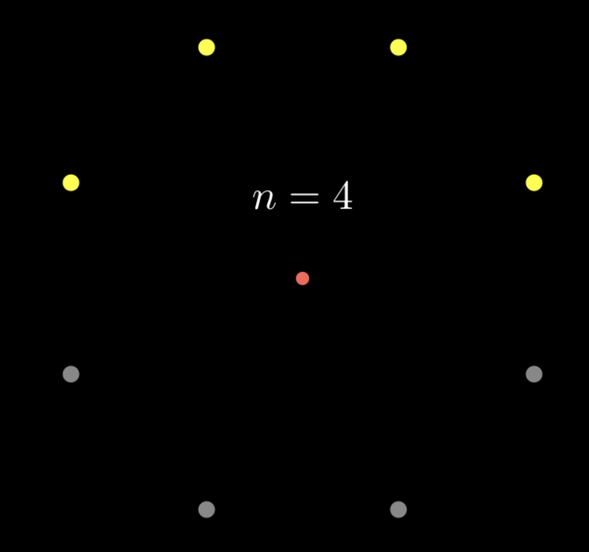
Resz=akf(z)=公式 312nak2n−1=ak2nak2n=ak2n(−1)=−ak2n \mathop{\operatorname{Res}}_{z = a_k}f(z) \stackrel{\text{公式 3}}{=} \frac{1}{2n a_k^{2n - 1}} = \frac{a_k}{2n \green{a_k ^{2n}}} = \frac{a_k}{2n \green{(-1)}} = \purple{- \frac{a_k}{2n}} Resz=akf(z)=公式 32nak2n−11=2nak2nak=2n(−1)ak=−2nak
I=2πi∑k=0n−1Resz=akf(z)=−2πi2n∑k=0n−1ak=−2πi2n∑k=0n−1eπi2nekπin \mathcal{I} = 2\pi i\sum_{k = 0}^{n - 1} \mathop{\operatorname{Res}}_{z = a_k} f(z) = \purple{-} \frac{2\pi i}{\purple{2n}} \sum_{k = 0}^{n -1} \purple{a_k} = - \frac{2\pi i}{2n} \sum_{k = 0}^{n -1} \orange{e^{\frac{\pi i}{2n}}} e^{\frac{k \pi i}{n}} I=2πik=0∑n−1Resz=akf(z)=−2n2πik=0∑n−1ak=−2n2πik=0∑n−1e2nπienkπi
利用等比数列求和公式
= −2πi2neπi2n(1−eπinn)1−eπin=eπinn=−1 −2πin1e−πi2n−eπi2n= −2πin12isin(−π2n)=πn1sinπ2n .\begin{align*} = & \ - \frac{2\pi i}{2n} \orange{e^{\frac{\pi i}{2n}}} \frac{(1 - \red{e^{ \frac{\pi i}{n}n}} )}{1 - e^{\frac{\pi i}{n}}} \stackrel{\red{e^{\frac{\pi i }{n}n} = -1}}{=}\ - \frac{2\pi i}{n} \frac{1}{\purple{e^{- \frac{\pi i}{2n}} - e^{\frac{\pi i}{2n}}}}\\ = & \ - \frac{2\pi i}{n} \frac{1}{\purple{2i \sin(- \frac{\pi}{2n})}} = \frac{\pi}{n} \frac{1}{\sin \frac{\pi}{2n}} \ . \end{align*} == −2n2πie2nπi1−enπi(1−enπin)=enπin=−1 −n2πie−2nπi−e2nπi1 −n2πi2isin(−2nπ)1=nπsin2nπ1 .
I=∫0+∞cosmxx2+1dx,m>0\begin{align*} \mathcal{I} = \int_0^{+\infty} \frac{\cos mx}{x^{2} + 1} dx, \qquad m > 0 \end{align*} I=∫0+∞x2+1cosmxdx,m>0
积分下限
注意下限是 000，不是 −∞-\infty−∞
I=12∫−∞+∞cosmxx2+1dx\mathcal{I} = \orange{\frac{1}{2}} \int_{-\infty}^{+\infty} \frac{\cos mx}{x^2 + 1}dx I=21∫−∞+∞x2+1cosmxdx
I=12∫−∞+∞cosmx+isinmxx2+1dx=∫−∞+∞12eimxx2+1dx\mathcal{I} = \frac{1}{2} \int_{-\infty}^{+\infty} \frac{\cos mx + \red{i \sin mx}}{x^2 + 1}dx = \int_{-\infty}^{+\infty} \frac{1}{2}\frac{e^{i m x}}{x^2 + 1}dx I=21∫−∞+∞x2+1cosmx+isinmxdx=∫−∞+∞21x2+1eimxdx
Resz=+if(z)eimz=Resz=+i12eimzz2+1=[12eimz(z2+1)′]z=i=12e−m2i . \mathop{\operatorname{Res}}_{z = + i} f(z)e^{i m z} = \mathop{\operatorname{Res}}_{z = + i} \frac{1}{2}\frac{e^{i m z}}{z^2 + 1} = \left[\frac{1}{2}\frac{e^{i m z}}{(z^2 + 1)'}\right]_{z = i} = \purple{\frac{1}{2} \frac{e^{-m}}{2i}} \ . Resz=+if(z)eimz=Resz=+i21z2+1eimz=[21(z2+1)′eimz]z=i=212ie−m .
I=(2πi)×12e−m2i=π2e−m . \mathcal{I} = (2\pi i) \times \purple{\frac{1}{2} \frac{e^{-m}}{2i}} = \frac{\pi}{2} e^{-m} \ . I=(2πi)×212ie−m=2πe−m .
另一种思路是取实部：
∫−∞+∞cosmxx2+1dx=Re∫−∞+∞eimxx2+1dx .\int_{-\infty}^{+\infty} \frac{\cos m x}{x^2 + 1}dx = \operatorname{Re}\int_{-\infty}^{+\infty} \frac{e^{i m x}}{x^2 + 1} dx \ . ∫−∞+∞x2+1cosmxdx=Re∫−∞+∞x2+1eimxdx .
考虑 m>0m > 0m>0，计算积分
I=∫−∞+∞sinmxx−idx,m>0\begin{align*} \mathcal{I} = \int_{-\infty}^{+\infty} \frac{\sin mx}{x - i} dx, \qquad m > 0 \end{align*} I=∫−∞+∞x−isinmxdx,m>0
I=12i∫−∞+∞eimx−e−imxx−idx . \mathcal{I} = \frac{1}{2i} \int_{-\infty}^{+\infty} \frac{e^{i m x} - e^{- i m x}}{x - i} dx \ . I=2i1∫−∞+∞x−ieimx−e−imxdx .
12i∫−∞+∞eimzz−idz=12i(2πi)e−m=πe−m . \frac{1}{2i}\int_{-\infty}^{+\infty} \frac{e^{i m z}}{z - i}dz = \frac{1}{2i} (2\pi i) \orange{e^{-m}} = \pi e^{-m} \ . 2i1∫−∞+∞z−ieimzdz=2i1(2πi)e−m=πe−m .
第二个积分可以利用变量替换 z′=−zz' = -zz′=−z，
∫−∞+∞e−imzz−idz=−∫+∞−∞eimz′−z′−idz′=0 \int_{-\infty}^{+\infty} \frac{e^{-i m z}}{z - i}dz = - \int_{+\infty}^{-\infty} \frac{e^{i m z'}}{ - z' - i}dz' = 0 ∫−∞+∞z−ie−imzdz=−∫+∞−∞−z′−ieimz′dz′=0
因为 (z′+1)−1eimz′(z' + 1)^{-1}e^{i m z'}(z′+1)−1eimz′ 在 z′z'z′ 上半平面 没有 奇点。
总结
I=πe−m . \mathcal{I} = \pi e^{-m} \ . I=πe−m .
虚部
小心，不能直接用取虚部的方法计算：
Im(eimzz−i) ≠ sinmzz−i . \operatorname{Im} \bigg(\frac{e^{i m z}}{z - i}\bigg) \ \red{\ne} \ \frac{\sin mz}{z - i} \ . Im(z−ieimz) = z−isinmz .
z→上半平面∞:{zf(z)⇒0,m=0f(z)⇒0,m>0 .\begin{align*} z \xrightarrow{\text{上半平面}} \infty: \quad \left\{\begin{array}{c c} z f(z) \Rightarrow 0, & m = 0 \\ f(z) \Rightarrow 0, & m > 0 \end{array}\right . \ . \end{align*} z上半平面∞:{zf(z)⇒0,f(z)⇒0,m=0m>0 .
∫−∞+∞f(x)eimxdx=2πi[∑iResz=aif(z)eimz+12∑jResz=bjf(z)eimz]\begin{align*} \int_{-\infty}^{+\infty} f(x) e^{i m x} dx = 2\pi i \left[ \sum_{i} \mathop{\operatorname{Res}}_{z = a_i} f(z) e^{i m z} + \orange{\frac{1}{2}} \sum_{j} \mathop{\operatorname{Res}}_{z = b_j} f(z) e^{i m z} \right] \nonumber \end{align*} ∫−∞+∞f(x)eimxdx=2πi[i∑Resz=aif(z)eimz+21j∑Resz=bjf(z)eimz]
主值
此处的符号 ∫−∞+∞\int_{-\infty}^{+\infty}∫−∞+∞ 同样指代积分 主值，定义为
∫−∞+∞=limR→∞ϵ→0∫[−R,R]−∪j(bj−ϵ,bj+ϵ) \green{\int_{-\infty}^{+\infty} = \lim_{\substack{ R\to \infty \\ \epsilon \to 0}} \int_{[- R , R] - \cup_j (b_j - \epsilon, b_j + \epsilon)}} ∫−∞+∞=R→∞ϵ→0lim∫[−R,R]−∪j(bj−ϵ,bj+ϵ)
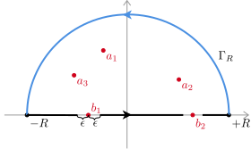
证明大意
要点：绕 bjb_jbj 的 下小半圆 CjC_jCj 积分为 半留数
∫Cjf(z)eimz=2πi12Resz=bj[f(z)eimz] . \int_{C_j} f(z) e^{i m z} = 2\pi i \orange{\frac{1}{2}} \mathop{\operatorname{Res}}_{z = b_j} \Big[f(z) e^{i m z}\Big] \ . ∫Cjf(z)eimz=2πi21Resz=bj[f(z)eimz] .
留数定理
2πi[∑iResz=aif(z)eimz+∑jResz=bjf(z)eimz]= 2πi∫f(x)eimxdx+2πi∑j12Resz=bjf(z)eimz\begin{align*} & \ 2\pi i \left[\sum_{i} \mathop{\operatorname{Res}}_{z = a_i} f(z)e^{im z} + \sum_{j}\mathop{\operatorname{Res}}_{z = b_j} f(z)e^{im z}\right] \\ = & \ 2\pi i \int f(x)e^{i m x}dx + 2\pi i \sum_{j} \orange{\frac{1}{2}}\mathop{\operatorname{Res}}_{z = b_j} f(z)e^{im z} \end{align*} = 2πi[i∑Resz=aif(z)eimz+j∑Resz=bjf(z)eimz] 2πi∫f(x)eimxdx+2πij∑21Resz=bjf(z)eimz
其中，左边的完整留数项被右边的半留数项抵消了 一半。
I=∫0+∞sinmxxdx . \mathcal{I} = \int_0^{+\infty} \frac{\sin mx}{x} dx \ . I=∫0+∞xsinmxdx .
注意积分下限
I=12∫−∞+∞sinmxxdx=12Im∫−∞+∞eimxxdx . \mathcal{I} = \purple{\frac{1}{2}} \int_{-\infty}^{+\infty} \frac{\sin mx}{x} dx = \purple{\frac{1}{2}} \orange{\operatorname{Im}} \int_{-\infty}^{+\infty} \frac{e^{i m x}}{x} dx \ . I=21∫−∞+∞xsinmxdx=21Im∫−∞+∞xeimxdx .
I=12Im[2πi×12Resz=01zeimz]=π2 . \mathcal{I} = \purple{\frac{1}{2}}\operatorname{Im} \left[{2\pi i \times \orange{\frac{1}{2}} \mathop{\operatorname{Res}}_{z = 0} \frac{1}{z}e^{i m z}}\right] = \frac{\pi}{2} \ . I=21Im[2πi×21Resz=0z1eimz]=2π .
mmm 无关
上述积分结果与 mmm 无关；后面介绍 δ\deltaδ 函数还会碰到
I=∫−∞+∞sinmxx−adx \mathcal{I} = \int_{-\infty}^{+\infty} \frac{\sin mx}{x - a}dx I=∫−∞+∞x−asinmxdx
I=Im∫−∞+∞eimxx−adx=Im[2πi12Resz=a(1zeimz)] \mathcal{I} = \purple{\operatorname{Im}} \int_{-\infty}^{+\infty} \frac{e^{i m x}}{x - a} dx = \purple{\operatorname{Im}} \Bigg[2\pi i \orange{\frac{1}{2}} \mathop{\operatorname{Res}}_{z = a} \Big(\frac{1}{z} e^{i m z}\Big)\Bigg] I=Im∫−∞+∞x−aeimxdx=Im[2πi21Resz=a(z1eimz)]
I=Im[πieima]=πcos(ma) \mathcal{I} = \operatorname{Im}\Big[\pi i e^{i m a}\Big] = \pi \cos (ma) I=Im[πieima]=πcos(ma)
大圆弧引理：若 f(z)f(z)f(z) 在大圆弧 CR={Reiθ ∣ θ1≤θ≤θ2}C_R = \{R e^{i \theta} \ | \ \theta_1 \le \theta \le \theta_2\}CR={Reiθ ∣ θ1≤θ≤θ2} 上 连续，且当圆弧上的点 zzz 的大小 ∣z∣→∞|z| \to \infty∣z∣→∞，zf(z)⇒λz f(z) \Rightarrow \lambdazf(z)⇒λ，则
limR→+∞∫CRf(z)dz=iλ(θ2−θ1) . \lim_{R \to +\infty}\int_{C_R} f(z) dz = i \lambda (\theta_2 - \theta_1) \ . R→+∞lim∫CRf(z)dz=iλ(θ2−θ1) .
与之前的 Jordan 引理类似
小圆弧引理：设 f(z)f(z)f(z) 在 aaa 附近小圆弧上 连续，当 z→az \to az→a，(z−a)f(z)⇒λ(z - a)f(z) \Rightarrow \lambda(z−a)f(z)⇒λ，则
limϵ→0∫Cϵf(z)dz=iλ(θ2−θ1) . \lim_{\epsilon \to 0}\int_{C_\epsilon}f(z) dz = i \lambda (\theta_2 - \theta_1) \ . ϵ→0lim∫Cϵf(z)dz=iλ(θ2−θ1) .
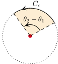
解析性
小圆弧引理 没有假设 复解析性，只需要连续性和一致极限存在
若 aaa 是 f(z)f(z)f(z) 的单极点，则 λ=Resz=af(z)\lambda = \operatorname{Res}_{z = a}f(z)λ=Resz=af(z)
limϵ→0∫Cϵf(z)dz=0\lim_{\epsilon \to 0} \int_{C_\epsilon} f(z) dz = 0 ϵ→0lim∫Cϵf(z)dz=0
I=∫0+∞f(x)dx,f(x)=x1/3x2+1 . \mathcal{I} = \int_0^{+\infty} f(x) dx, \qquad f(x)= \frac{x^{1/3}}{x^2 + 1} \ . I=∫0+∞f(x)dx,f(x)=x2+1x1/3 .
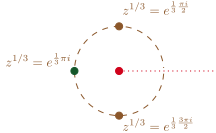
分子 z1/3z^{1/3}z1/3 的的割线与单值分支设定：(−1)1/3=eπi3(-1)^{1/3} = e^{\frac{\pi i}{3}}(−1)1/3=e3πi
无穷近似
升级 x→zx \to zx→z 后，[0,+∞)[0, +\infty)[0,+∞) 上方直线 C1C_1C1 上 z1/3/(z2+1)z^{1/3}/(z^2 + 1)z1/3/(z2+1) 的函数值无限接近 x1/3/(x2+1)x^{1/3}/(x^2 + 1)x1/3/(x2+1) 在正实轴的值。
通过研究 C1C_1C1 积分，可以无穷近似 原本的积分 I\mathcal{I}I。
补全积分围道
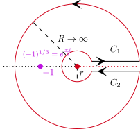
函数在割线上方 C1C_1C1 与下方 C2C_2C2 的取值，
limϵ→+0f(x+iϵ)=x1/3x2+1,limϵ→+0f(x−iϵ)=e2πi3x1/3x2+1 . \lim_{\epsilon \to +0}f(x + i \epsilon) = \frac{x^{1/3}}{x^2 + 1}, \quad \lim_{\epsilon \to +0}f(x - i \epsilon) = \orange{ e^{\frac{2\pi i}{3}}} \frac{x^{1/3}}{x^2 + 1} \ . ϵ→+0limf(x+iϵ)=x2+1x1/3,ϵ→+0limf(x−iϵ)=e32πix2+1x1/3 .
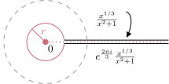
因此 (C1C_1C1 向右，C2C_2C2 向左)
∫C2f(z)dz=−e2πi3∫C1f(z)dz=−e2πi3I . \int_{C_2} f(z) dz = \red{-} \orange{ e^{\frac{2\pi i}{3}}} \green{\int_{C_1}f(z) dz} = - e^{\frac{2\pi i}{3}} \green{\mathcal{I}} \ . ∫C2f(z)dz=−e32πi∫C1f(z)dz=−e32πiI .
C1C_1C1 积分几乎就是原本 [0,+∞)[0, +\infty)[0,+∞) 积分
(∫C1+∫C2)f(z)dz=(1−e2πi3)I .\left({\int_{C_1} + \int_{C_2}}\right)f(z)dz = (1 - e^{\frac{2\pi i}{3}}) \green{\mathcal{I}} \ . (∫C1+∫C2)f(z)dz=(1−e32πi)I .
∮Cf(z)dz=∫C1+C2+Cr+CRf(z)dz= 2πi∑±Resz→±if(z)(1−e2πi3)I+∫Cr+CRf(z)dz= 2πi∑±Resz→±if(z)\begin{align*} \oint_C f(z) dz = \int_{C_1 + C_2 + C_r + C_R} f(z) dz = & \ 2\pi i \sum_\pm \mathop{\operatorname{Res}}_{z \to \pm i}f(z) \\ (1 - e^{\frac{2\pi i}{3}})\mathcal{I} + \cancel{\red{\int_{C_r + C_R} f(z) dz}} = & \ 2\pi i \sum_\pm \mathop{\operatorname{Res}}_{z \to \pm i}f(z) \end{align*} ∮Cf(z)dz=∫C1+C2+Cr+CRf(z)dz=(1−e32πi)I+∫Cr+CRf(z)dz= 2πi±∑Resz→±if(z) 2πi±∑Resz→±if(z)
(z−0)z1/3z2+1⇒z→00,zz1/3z2+1⇒z→∞0(z - 0) \frac{z^{1/3}}{z^2 + 1} \stackrel{z \to 0}{\Rightarrow} 0, \qquad z \frac{z^{1/3}}{z^2 + 1} \stackrel{z \to \infty}{\Rightarrow} 0 (z−0)z2+1z1/3⇒z→00,zz2+1z1/3⇒z→∞0
Resz=±iz1/3z2+1=z1/3(z2+1)′∣z=±i=z1/32z∣z=±i \mathop{\operatorname{Res}}_{z = \pm i} \frac{z^{1/3}}{z^2 + 1} = \frac{z^{1/3}}{(z^2 + 1)'}\bigg|_{z = \pm i} = \frac{z^{1/3}}{2z} \bigg|_{z = \pm i} Resz=±iz2+1z1/3=(z2+1)′z1/3z=±i=2zz1/3z=±i
z1/3∣z=+i=e13πi2,z1/3∣z=−i=e133πi2 ⇒Resz=+if(z)=12ie13πi2,Resz=−if(z)=e133πi22(−i)=−12 z^{1/3}\bigg|_{z = + i} = \purple{e^{\frac{1}{3} \frac{\pi i}{2}}}, \quad z^{1/3}\bigg|_{z = - i} = \green{e^{\frac{1}{3} \frac{3\pi i}{2}}} \\ ~\\ \Rightarrow\mathop{\operatorname{Res}}_{z = +i}f(z) = \frac{1}{2i}\purple{e^{\frac{1}{3} \frac{\pi i}{2}}}, \quad \mathop{\operatorname{Res}}_{z = -i}f(z) = \frac{\green{e^{\frac{1}{3}\frac{3\pi i}{2}}}}{2(-i)} = - \frac{1}{2} z1/3z=+i=e312πi,z1/3z=−i=e3123πi ⇒Resz=+if(z)=2i1e312πi,Resz=−if(z)=2(−i)e3123πi=−21
(1−e2πi3)I= 2πi(12ieπi6+(−12))⇒I= π3 .\begin{align*} (1 - e^{\frac{2\pi i}{3}}) \mathcal{I} = & \ 2\pi i\left( \frac{1}{2i}e^{\frac{\pi i}{6}} + (- \frac{1}{2})\right) \\ \Rightarrow \qquad \mathcal{I} = & \ \frac{\pi}{\sqrt{3}} \ . \end{align*} (1−e32πi)I=⇒I= 2πi(2i1e6πi+(−21)) 3π .
有两种常见的解析区形状：开圆盘、环状
问题：设 fff 在图中开圆盘中解析, 下面三个表达式分别等于多少？
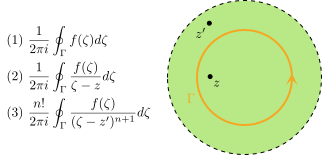
若函数 f(z)f(z)f(z) 在图中开圆盘中解析，以 aaa 为中心作泰勒展开 ~ f(z)=∑n=0+∞[∮Γdζ2πif(ζ)(ζ−a)n+1](z−a)n \displaystyle f(z) =\sum _{n=0}^{+\infty }\left[\oint _{\Gamma }\frac{d\zeta }{2\pi i}\frac{f( \zeta )}{( \zeta -a)^{n+1}}\right]( z-a)^{n} f(z)=n=0∑+∞[∮Γ2πidζ(ζ−a)n+1f(ζ)](z−a)n
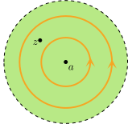
问题：Γ\GammaΓ 应该取 大 圆圈、小 圆圈还是 两个都可以？
若函数 f(z)f(z)f(z) 在图中开圆盘中几乎处处解析，红点为 奇点。
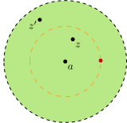
问题：是否有 f(z)=∑n=0+∞1n!f(n)(a)(z−a)nf(z) = \sum_{n = 0}^{+\infty}\frac{1}{n!} f^{(n)}(a)(z - a)^nf(z)=∑n=0+∞n!1f(n)(a)(z−a)n？
问题：是否有 f(z′)=∑n=0+∞1n!f(n)(a)(z′−a)nf(z') = \sum_{n = 0}^{+\infty}\frac{1}{n!} f^{(n)}(a)(z' - a)^nf(z′)=∑n=0+∞n!1f(n)(a)(z′−a)n？